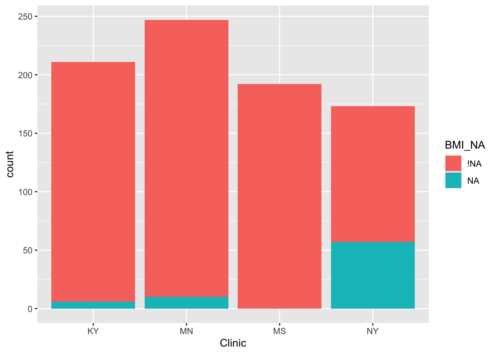
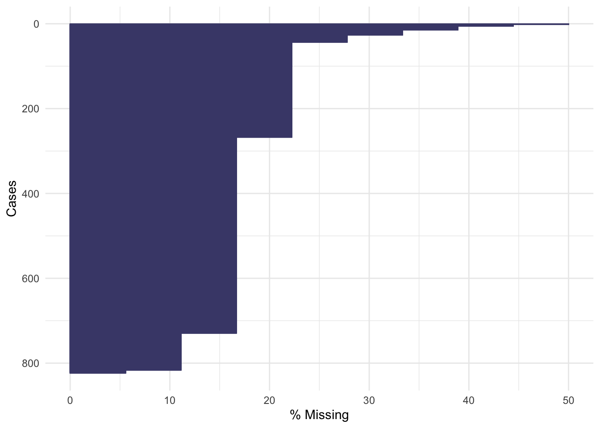
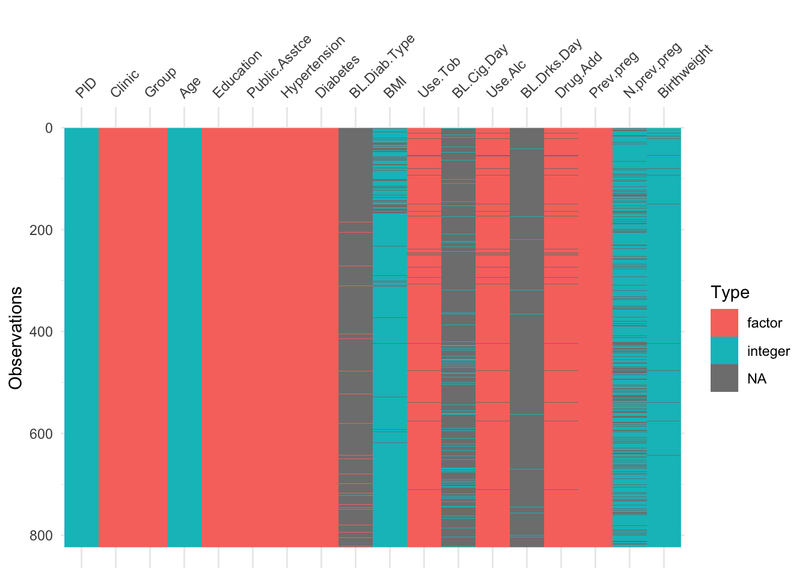
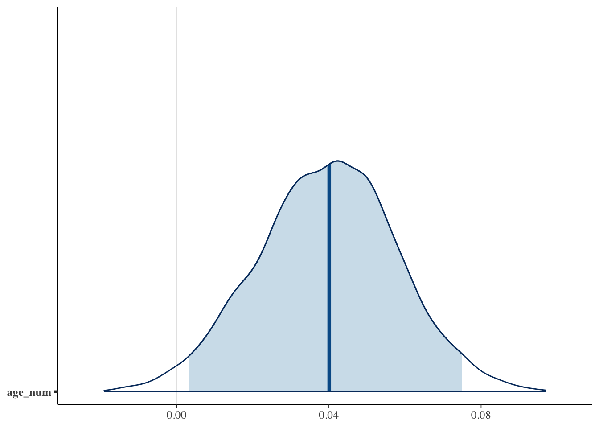
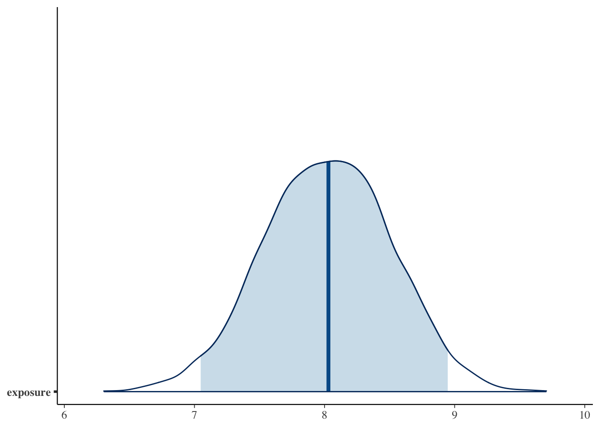

B Computer Practical 2 - Analysis
Preliminaries
You will need a lot of the techniques covered in this practical for your summative assignments, so consider it a sort of informal formative assignment to finish it if you don’t in class. Or, at the very least, you might need to return to it while working on your summative assignments.
There will be a mixture of full solutions, examples of possible solutions and example code to adapt. If you’re not sure how to do something, please ask!
In the example code, I have used the same names for most objects. In order to store your results and avoid confusion, it will be sensible to name things intelligently! For example, suffix each allocation data frame so that you know which allocation method you used. Create an R file with the commands in that you use, so that you can easily replicate your work.
R practicalities
There are many, many packages in R that implement methods for designing and analysing clinical trials (see a list at CRAN task view). We will look at some of these, and will also write our own code for some tasks. Remember that to install a package, you can do
If you have problems running R on your laptop, or on the university machines, the most foolproof way might be to use Github codespaces (thanks to Louis Aslett, who developed this for Data Science and Statistical Computing II). You may be familiar with this approach if you did Bayesian Computational Modelling III.
An advantage of this is that you can open the same codespace (the same instance of R) from any computer, so if you plan to work on things (for example your summative assignment, which will involve some R) from more than one computer, this might be ideal.
This requires you to have a github account (you can sign up for free here) and there is a short guide to creating a github account here.
B.1 Analysis
For our analysis section, we will work with real datasets, and use them to explore and compare some of the different analysis methods we’ve covered in lectures.
B.1.1 Polyps data
The dataset we’ll use concerns a small trial in which patients with familial adenomatous polyposis (FAP) were treated either with Sulindac (group T) or a placebo (group C). People with FAP tend to have polyps (small growths) grow in their colon. Although the polyps themselves are not dangerous or harmful, they can turn into colon cancer. You can read about the study in Giardiello et al. (1993).
Exercise B.1 First of all let’s explore the dataset:
- Look at the help file for
polyps - Which columns should you use for baseline and outcome variables?
- Plot the data in these columns. Do you see any issues? Can you suggest a way to address them? What effect will this have on our estimator of the treatment effect?
Click for solution
Solution. First of all, to access the data, enter
You can then view the help file by entering ?polyps.
To investigate the columns in polyps we can use the structure function str(polyps)
We have the baseline number of polyps for each patient in the column baseline, and a sensible column to use for the outcome would be number12m. Other baseline variables are sex and age.
To plot the baseline and outcome variables we can do


These are both very right skewed, and exclusively positive (which makes sense given they are counts). A sensible thing to do therefore would be to take the log of these two variables. Since they are counts we will use the log to base 10, so that our results are easier to interpret. If you’d prefer to use natural logs that’s fine, some of your numbers will be different.
Since we used the logarithms of the numbers of polyps, our treatment effect is \[\log\left(X_T\right) - \log\left(X_C\right) = \log\left(\frac{X_T}{X_C}\right).\]
We will work through the tests as we did in lectures, to see how the results differ.
WARNING
Remember that working through the analysis methods like this in a real trial scenario would be terrible practice: it would lead to several different results (eg. p-values) with no obvious way to choose between them. It would therefore be tempting to choose the ‘best’ (ie. the one with the smallest p-value). This is known as ‘p-fishing’ or ‘p-hacking’, and is rather disingenuous! As we said in the first few lectures, best practice is to plan everything, including the analysis, before the trial has started.
Exercise B.2 Using just the outcome variable (which should be log_number12m or something similar, see solution above if you aren’t sure why), test the hypothesis that the Sulindac has had some effect.
Click for solution
Solution. We can either do this the long way or the short way! For sanity’s sake, we’ll do it the long way once, then in subsequent questions I’ll only show the short way in the solutions.
The long way
The first thing to do is to calculate means for each group:
polyps_df = na.omit(polyps) # two participants (001 and 018) don't have data for 12m, so remove these
mean_T = mean(polyps_df$log_number12m[polyps_df$treatment=="sulindac"])
sd_T = sd(polyps_df$log_number12m[polyps_df$treatment=="sulindac"])
mean_C = mean(polyps_df$log_number12m[polyps_df$treatment=="placebo"])
sd_C = sd(polyps_df$log_number12m[polyps_df$treatment=="placebo"])
# There are 11 patients on Placebo (group C) and 9 on Sulindac (group T)
# The pooled standard deviation
pooled_sd_polypsX = sqrt((10*sd_C^2 + 8*sd_T^2)/(10+8))
# Finally we find the test statistic
test_stat = (mean_T - mean_C)/(pooled_sd_polypsX*sqrt(1/11 + 1/9))Under \(H_0\) (that there is no treatment effect) the test statistic follows a \(t_{18}\) distribution, and therefore we find our \(p\)-value by
## [1] 0.001046571Note that if the test statistic were positive, we’d have to do
Thus \(p=0.001\) and we conclude that the treatment effect is significant. Our confidence interval is given by
estimate = mean_T - mean_C
error = qt(0.975, df=18)*pooled_sd_polypsX*sqrt(1/11 + 1/9)
c(estimate - error, estimate + error)## [1] -1.2264748 -0.3678718The short way
R has a t-test function built in, so we can simply use that. Notice that it gives us everything our heart might desire (on a fairly mundane day), including a confidence interval!
t.test(
x=polyps_df$log_number12m[polyps_df$treatment == "sulindac"],
y=polyps_df$log_number12m[polyps_df$treatment == "placebo"],
alternative = "two.sided",
var.equal=T, # this makes the method use pooled variances, as we did in lectures
conf.level = 0.95 # note that this is 1-alpha
)##
## Two Sample t-test
##
## data: polyps_df$log_number12m[polyps_df$treatment == "sulindac"] and polyps_df$log_number12m[polyps_df$treatment == "placebo"]
## t = -3.9012, df = 18, p-value = 0.001047
## alternative hypothesis: true difference in means is not equal to 0
## 95 percent confidence interval:
## -1.2264748 -0.3678718
## sample estimates:
## mean of x mean of y
## 0.6671373 1.4643106Either way, our 95% confidence interval is \(\left(-1.226,\;-0.368\right)\) (to 3 d.p). Therefore, the confidence interval for \(\frac{X_T}{X_C}\) is
\[\left(10^{-1.226},\;10^{-0.368}\right) = \left(0.0594,\;0.429\right).\] That is, the number of polyps at 12 months for someone in group \(T\) is likely to be somewhere between \(0.0594 X_C\) and \(0.429 X_C\).
We’ll now move on to comparing the differences between baseline and outcome
Exercise B.3 Perform another \(t\)-test, this time using the difference between outcome and baseline. Hint: because we’ve taken logs, you’ll have to think about what variable to use and perhaps experiment with some possibilities
Click for solution
Solution. The first step is to calculate a difference column. This is somewhat complicated by that fact that we have taken logs of the measurements. Taking logs of the difference would not work, since some are negative. Potentially it might work to just work with the (unlogged) differences
polyps_df$diff = polyps_df$number12m - polyps_df$baseline
ggplot(data=polyps_df, aes(x=diff, fill=treatment)) + geom_histogram(position="dodge", bins=10)
But the outliers look potentially problematic, and the central bulk of each distribution doesn’t look very normal. We could also try the difference of the logged measurements:
polyps_df$diff_log = polyps_df$log_number12m - polyps_df$log_baseline
ggplot(data=polyps_df, aes(x=diff_log, fill=treatment)) + geom_histogram(position="dodge", bins=10)
This looks a lot better - no more outliers and closer to normal-looking. Obviously with so few observations we won’t have a nice normal curve.
To do a t-test, we can use R’s in-built function
t.test(
x=polyps_df$diff_log[polyps_df$treatment == "sulindac"],
y=polyps_df$diff_log[polyps_df$treatment == "placebo"],
alternative = "two.sided",
var.equal=T, # this makes the method use pooled variances, as we did in lectures
conf.level = 0.95 # note that this is 1-alpha
)##
## Two Sample t-test
##
## data: polyps_df$diff_log[polyps_df$treatment == "sulindac"] and polyps_df$diff_log[polyps_df$treatment == "placebo"]
## t = -3.5142, df = 18, p-value = 0.002477
## alternative hypothesis: true difference in means is not equal to 0
## 95 percent confidence interval:
## -1.0242756 -0.2578053
## sample estimates:
## mean of x mean of y
## -0.58476481 0.05627565Finally we can try fitting an ANCOVA model to the data, using the function lm.
Exercise B.4 Fit an ANCOVA model to the licorice data, and interpret your results. If you aren’t familiar with the function lm, it might be a good idea to look at the solutions.
Click for solution
Solution. In the ANCOVA model we saw in lectures so far, we fit a linear model with the outcome as dependent / target variable, and the trial group and baseline as independent / explanatory variables.
##
## Call:
## lm(formula = log_number12m ~ treatment + log_baseline, data = polyps_df)
##
## Residuals:
## Min 1Q Median 3Q Max
## -0.69628 -0.15530 0.04155 0.17288 0.68553
##
## Coefficients:
## Estimate Std. Error t value Pr(>|t|)
## (Intercept) 0.6291 0.2798 2.249 0.038084 *
## treatmentsulindac -0.7046 0.1675 -4.205 0.000595 ***
## log_baseline 0.5932 0.1824 3.251 0.004698 **
## ---
## Signif. codes: 0 '***' 0.001 '**' 0.01 '*' 0.05 '.' 0.1 ' ' 1
##
## Residual standard error: 0.3673 on 17 degrees of freedom
## Multiple R-squared: 0.6659, Adjusted R-squared: 0.6266
## F-statistic: 16.94 on 2 and 17 DF, p-value: 8.973e-05Based on this, the effect of the drug sulindac is significant (\(p=0.00595\), lower than our previous models). The 95% CI for the treatment effect (which is still \(\log\left(\frac{X_T}{X_C}\right)\)) now is
## [1] -1.0579941 -0.3512059We could create a nicer-looking table of the coefficients using tbl_regression (from gtsummary):
| Characteristic | Beta | 95% CI1 | p-value |
|---|---|---|---|
| treatment | |||
| placebo | — | — | |
| sulindac | -0.70 | -1.1, -0.35 | <0.001 |
| log_baseline | 0.59 | 0.21, 0.98 | 0.005 |
| 1 CI = Confidence Interval | |||
but note that this doesn’t show all the information that summary does.
Unlike in the \(t\)-test where we can only compare measurements like-for-like, in ANCOVA we fit a coefficient to the baseline covariate. This means we are no longer limited to comparing the outcome variable to variables on the same scale, but can also include other baseline variables.
Exercise B.5 Fit another linear model, this time including the other baseline variables.
Click for solution
Solution.
lm_polyp2 = lm(log_number12m ~ treatment + log_baseline + sex + age, data = polyps_df)
summary(lm_polyp2)##
## Call:
## lm(formula = log_number12m ~ treatment + log_baseline + sex +
## age, data = polyps_df)
##
## Residuals:
## Min 1Q Median 3Q Max
## -0.59539 -0.32008 0.09788 0.17374 0.62089
##
## Coefficients:
## Estimate Std. Error t value Pr(>|t|)
## (Intercept) 0.888170 0.503801 1.763 0.098266 .
## treatmentsulindac -0.730464 0.177936 -4.105 0.000936 ***
## log_baseline 0.495560 0.216900 2.285 0.037307 *
## sexmale 0.197442 0.201555 0.980 0.342821
## age -0.009412 0.012205 -0.771 0.452620
## ---
## Signif. codes: 0 '***' 0.001 '**' 0.01 '*' 0.05 '.' 0.1 ' ' 1
##
## Residual standard error: 0.3779 on 15 degrees of freedom
## Multiple R-squared: 0.688, Adjusted R-squared: 0.6048
## F-statistic: 8.27 on 4 and 15 DF, p-value: 0.0009895In this case it appears that the other two baseline covariates, age and sex, don’t have a significant effect on the outcome.
Exercise B.6 Inspect some plots of the residuals, to check whether these models have any systematic problems. Does there appear to be any multicollinearity in the data?
Click for solution
Solution. These solutions will demonstrate some methods with the first model. First of all, we can add columns with the residuals and fitted values from the model.
polyps_df$resid1 = resid(lm_polyp1)
polyps_df$fitted1 = fitted(lm_polyp1)
ggplot(data=polyps_df, aes(x=fitted1, y=resid1, col=treatment)) + geom_point()


None of these ring huge alarm bells, but because the dataset is so small it’s quite hard to tell! Arguably the residuals for the sulindac group are more spread out than those for the plaecbo, but there are no obvious systematic trends.
We can find the variance inflation factor by
## treatment log_baseline
## 1.029768 1.029768and it indicates no problems. Another sign that the ANCOVA model is well-fitted is that the standard errors of the coefficients are all reasonably small. If there was a problem, for example multicollinearity, some of these would blow up.
B.1.2 Extension: Treatment for maternal periodontal disease
In this section we look at a larger and more complex (therefore more realistic) dataset. The opt data are in the package medicaldata, which you should already have loaded.
The aim of the study is to find out whether treating women for periodontal disease during the first 21 weeks of pregnancy resulted in a low birth weight or pre-term birth.
The groups are stored in the group variable
groupT: those who received periodontal treatment, and tooth polishing at their follow-upsgroupC: Brief oral exams
There are 823 participants and 171 variables - many of these are baseline covariates, but there are also quite a few interim measurements.
The study’s primary outcome variable is gestational age at end of pregnancy, but birth weight was also measured, as well as some clinical measures of periodontal disease and some microbiological and immunological outcomes.
To make this more managable, we will concentrate on the outcome Birthweight.
Exercise B.7 Plot the variable Birthweight. Do we need to use any transformations before we model it?
Click for solution

There are lots of issues with the opt data, many of which are common in real datasets.
We’ll reduce the dataset to a more managable size, by removing all outcomes except Birthweight and reducing the number of covariates.
One issue with the opt dataset is missingness. While some of the missing data are genuinely missing, quite a lot of it can be logically filled in. This is explained in the code below.
opt_red = opt[ ,c(1:22,72)]
# Change NAs to "None" for diabetic
# since in opt the non-diabetic people are coded as NA (and therefore excluded from the model)
diab = as.character(opt_red$BL.Diab.Type)
diab[is.na(diab)] = "None"
opt_red$BL.Diab.Type = as.factor(diab)
# similar problem with smokers and how many cigarettes per day
# If people are non-smokers and have missing for number of cigarettes per day
# change their number of cigarettes to zero
sm = opt_red$Use.Tob
cigs = opt_red$BL.Cig.Day
cigs[(is.na(cigs)&(sm=="No "))] = 0
opt_red$BL.Cig.Day = cigs
# Same for alcohol and drinks per day
alc = opt_red$Use.Alc
dr = opt_red$BL.Drks.Day
dr[(is.na(dr)&(alc=="No "))] = 0
opt_red$BL.Drks.Day = dr
# If a participant hasn't had a previous pregnancy, her N.prev.preg should be zero (not NA)
pp = opt_red$Prev.preg
npp = opt_red$N.prev.preg
npp[pp=="No "] = 0
opt_red$N.prev.preg = nppWhen we use lm to fit an ANCOVA model, all rows with an NA in will be ignored. It’s therefore important to try to eradicate any NAs where we actually do know the value!
In reality we’d also investigate the patterns of missingness to check whether this might have introduced bias into the trial. There’s a whole extra computer practical on this that I’ve included on the website but that we aren’t going to do (and so it won’t be assessed!) - C. Feel free to have a look.
Exercise B.8 Perform a \(t\)-test on the outcome Birthweight. What do you find? Can you also perform a \(t\)-test using difference from baseline?
Click for solution
Solution. To perform the \(t\)-test we can use the inbuilt R function
# Check SDs are fairly close before proceeding
sd(opt_red$Birthweight[opt_red$Group == "T"], na.rm=T)## [1] 636.82## [1] 727.4854t.test(
x=opt_red$Birthweight[opt_red$Group == "T"],
y=opt_red$Birthweight[opt_red$Group == "C"],
alternative = "two.sided",
var.equal=T, # this makes the method use pooled variances, as we did in lectures
conf.level = 0.95 # note that this is 1-alpha
)##
## Two Sample t-test
##
## data: opt_red$Birthweight[opt_red$Group == "T"] and opt_red$Birthweight[opt_red$Group == "C"]
## t = 0.74585, df = 807, p-value = 0.456
## alternative hypothesis: true difference in means is not equal to 0
## 95 percent confidence interval:
## -58.49266 130.18492
## sample estimates:
## mean of x mean of y
## 3216.670 3180.824We find that the difference in Birthweights between the groups is not even close to significant (\(p=0.456\)).
We can’t do a \(t\)-test with differences because there is no comparable baseline measurement.
Now we will move on to ANCOVA.
Exercise B.9 Before fitting the model, think about what you expect to find. Bear in mind:
- the result above
- the description of risk factors of preterm birth / low birth weight in the help file for
opt - which variables you will include in your model
Click for solution
Solution. The \(p\)-value from the \(t\)-test was very high, so it seems unlikely that we’ll find a significant treatment effect using ANCOVA unless there are some significant interactions going on between covariates.
The help file says (under ‘Background’):
Many risk factors for preterm birth have already been identified, including maternal age, drug use, and diabetes. However, such factors are exhibited in only about half of preterm birth mothers, highlighting a need to expand our understanding of what contributes to preterm birth risk.
Therefore, if we include related factors in our model (many of which we have in our dataset) we should expect to see significant coefficients. But, it sounds like there is a lot that isn’t well understood, so our model is likely not to explain a huge proportion of the variance.
Exercise B.10 Fit an ANCOVA model. What do you find?
Click for solution
Solution. To fit a linear model including every variable as a covariate (apart from the target variable), we can do
##
## Call:
## lm(formula = Birthweight ~ ., data = opt_red[, -1])
##
## Residuals:
## Min 1Q Median 3Q Max
## -3019.46 -233.35 46.89 382.82 1935.06
##
## Coefficients: (1 not defined because of singularities)
## Estimate Std. Error t value Pr(>|t|)
## (Intercept) 3906.439 702.835 5.558 3.91e-08 ***
## ClinicMN -57.521 73.391 -0.784 0.43345
## ClinicMS -173.068 88.189 -1.962 0.05011 .
## ClinicNY -146.548 100.180 -1.463 0.14397
## GroupT 28.780 49.914 0.577 0.56440
## Age -1.686 5.417 -0.311 0.75572
## BlackYes -158.055 127.807 -1.237 0.21664
## WhiteYes -47.195 100.791 -0.468 0.63976
## Nat.AmYes -224.757 112.946 -1.990 0.04699 *
## AsianYes -142.693 301.298 -0.474 0.63594
## HispNo 133.343 75.097 1.776 0.07624 .
## HispYes 126.498 115.009 1.100 0.27177
## EducationLT 8 yrs -43.324 70.513 -0.614 0.53915
## EducationMT 12 yrs 23.011 66.301 0.347 0.72864
## Public.AsstceYes -144.623 62.886 -2.300 0.02176 *
## HypertensionY -372.548 148.033 -2.517 0.01207 *
## DiabetesYes 443.811 170.343 2.605 0.00938 **
## BL.Diab.TypeType I -425.019 318.490 -1.334 0.18249
## BL.Diab.TypeType II NA NA NA NA
## BMI 2.124 3.857 0.551 0.58206
## Use.TobYes -17.794 134.088 -0.133 0.89446
## BL.Cig.Day -23.101 11.560 -1.998 0.04607 *
## Use.AlcYes -159.827 223.653 -0.715 0.47509
## BL.Drks.Day 28.460 24.851 1.145 0.25252
## Drug.AddNo -498.971 659.330 -0.757 0.44944
## Drug.AddYes -475.778 806.745 -0.590 0.55555
## Prev.pregYes 85.355 70.825 1.205 0.22856
## N.prev.preg -17.281 18.228 -0.948 0.34345
## ---
## Signif. codes: 0 '***' 0.001 '**' 0.01 '*' 0.05 '.' 0.1 ' ' 1
##
## Residual standard error: 653.6 on 686 degrees of freedom
## (110 observations deleted due to missingness)
## Multiple R-squared: 0.06774, Adjusted R-squared: 0.03241
## F-statistic: 1.917 on 26 and 686 DF, p-value: 0.004183We see from the model summary that our model is terrible: \(R^2=0.03241\), which means it is explaining about 3% of the variance in Birthweight.
If you want to use only certain terms, you can include them in the formula, for example
We see that, as we expected, the Group variable is not significant (\(p=0.5644\)). However, some terms are significant, for example whether or not the participant has diabetes, and how many cigarettes a mother smokes per day - this isn’t surprising given the contextual information we had.
Exercise B.11 Perform some diagnostic checks on your model. Do you have any reason to suspect it isn’t adequate?
Click for solution
Solution. One thing to notice from the linear model summary is that many coefficients have proportionally quite large standard errors. This could be because of a lack of data (eg. if there are very few participants in some category) or because of multicollinearity (in which case the model cannot know which of the linked variables to attribute the effect to). Combining some categories or carefully removing some covariates could help improve the model.
We can also study the residuals of our model, to check that they appear to be homoskedastic and approximately normal with mean 0.
The first step is to extract the residuals and the fitted values (which are also useful). We will create a new data frame called opt_diag with these in, so that we can plot things easily but don’t pollute our original dataset (in case we want to fit any more models)
opt_diag = na.omit(opt_red) # lm only fits where all variables are present
opt_diag$resid = resid(lm_full)
opt_diag$fitted = fitted(lm_full)Some examples of plots are


Exercise B.12 Given the results of your ANCOVA model, what do you think the risks would be if the study had been much smaller, or if the allocation had not been well-balanced?
Click for solution
Solution. In this case, it would be possible for the baseline factors that did turn out to be significant to make it appear that the treatment had a significant effect. This wouldn’t be possible with ANCOVA, but it would with a \(t\)-test in which the other covariates aren’t considered.